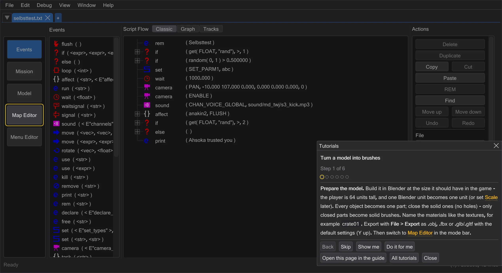
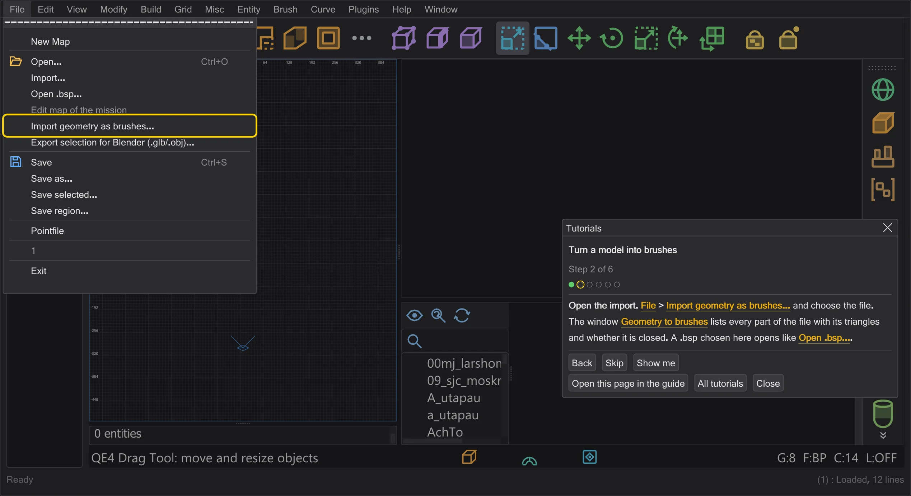
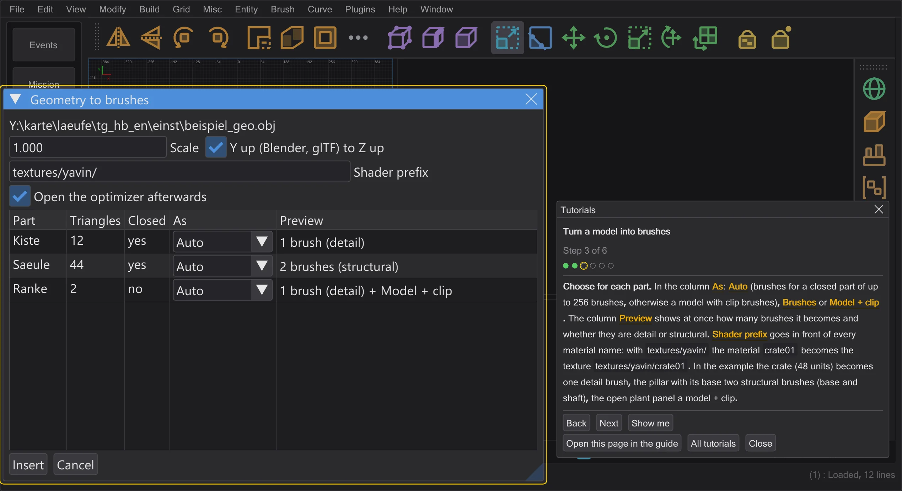
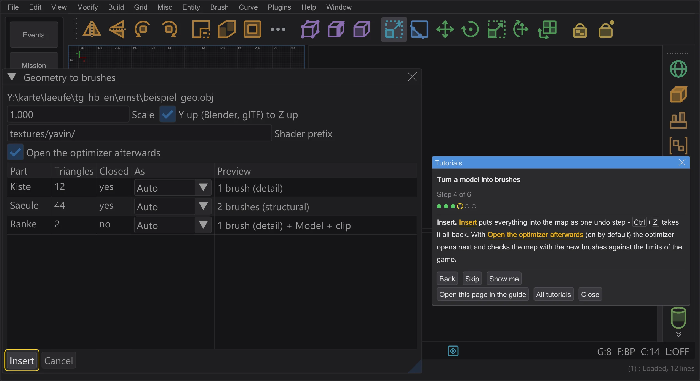
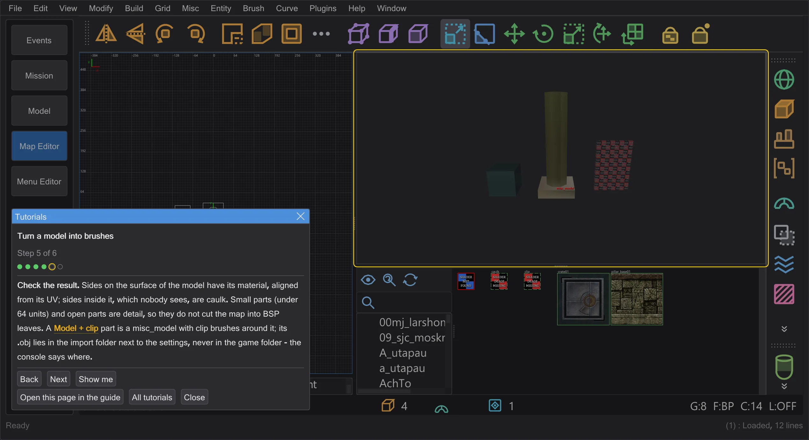
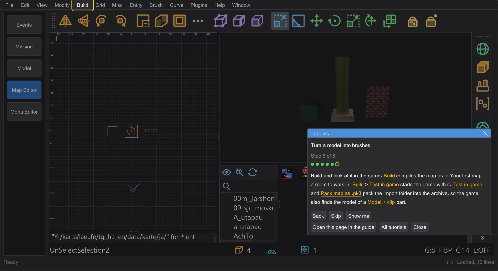

Turn a model into brushes
Export a model from Blender, turn its parts into brushes or into a model with clip brushes in the map editor, and check the result.
Steps#
- 1
Prepare the model. Build it in Blender at the size it should have in the game - the player is 64 units tall, and one Blender unit becomes one unit (or set Scale later). Every object becomes one part; close the solid ones (no holes) - only closed parts become solid brushes. Name the materials like the textures, for example
crate01. Export with File > Export as .obj, .fbx or .glb/.gltf with the default settings (Y up). Then switch to Map Editor in the mode bar.
Step 1 in the program: the tutorial highlights where to go next. - 2
Open the import. File > Import geometry as brushes and choose the file. The window Geometry to brushes lists every part of the file with its triangles and whether it is closed. A .bsp chosen here opens like Open .bsp.

Step 2 in the program: the tutorial highlights where to go next. - 3
Choose for each part. In the column As: Auto (brushes for a closed part of up to 256 brushes, otherwise a model with clip brushes), Brushes or Model + clip. The column Preview shows at once how many brushes it becomes and whether they are detail or structural. Shader prefix goes in front of every material name: with
textures/yavin/the materialcrate01becomes the texturetextures/yavin/crate01. In the example the crate (48 units) becomes one detail brush, the pillar with its base two structural brushes (base and shaft), the open plant panel a model + clip.
Step 3 in the program: the tutorial highlights where to go next. - 4
Insert. Insert puts everything into the map as one undo step - Ctrl+Z takes it all back. With Open the optimizer afterwards (on by default) the optimizer opens next and checks the map with the new brushes against the limits of the game.

Step 4 in the program: the tutorial highlights where to go next. - 5
Check the result. Sides on the surface of the model have its material, aligned from its UV; sides inside it, which nobody sees, are caulk. Small parts (under 64 units) and open parts are detail, so they do not cut the map into BSP leaves. A Model + clip part is a misc_model with clip brushes around it; its .obj lies in the import folder next to the settings, never in the game folder - the console says where.

Step 5 in the program: the tutorial highlights where to go next. - 6
Build and look at it in the game. Build compiles the map as in Your first map: a room to walk in; Build > Test in game starts the game with it. Test in game and Pack map as .pk3 pack the import folder into the archive, so the game also finds the model of a Model + clip part.

Step 6 in the program: the tutorial highlights where to go next.


Good to know#
- A compiled map (.bsp) opens with File > Open .bsp: the models it recognizes come back as misc_model, not as brushes. Keep unrecognized model faces as brushes keeps the faces of models it does not recognize as thin brushes in the layer Unrecognized model faces - see Recovering misc_model from the geometry.
- Game models (.md3, .glm) cannot be imported as brushes - the import reads .obj, .fbx, .glb and .gltf. Put them into the map as misc_model, for example from the ⟦Asset browser⟧.
- Just the model, without brushes: drag the file onto the map editor (Drag a model into the map). Back to Blender: File > Export selection for Blender (.glb/.obj) (To Blender and back).